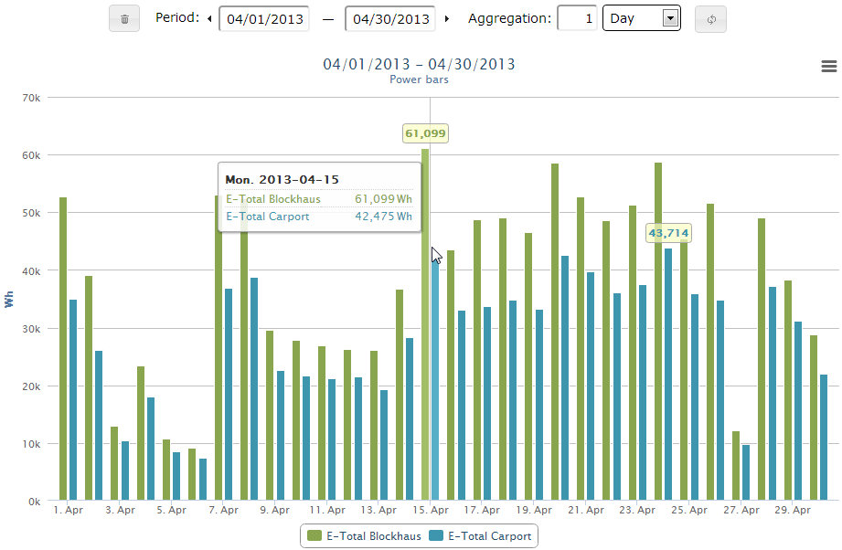
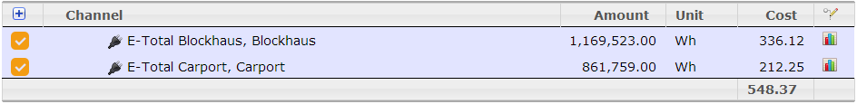
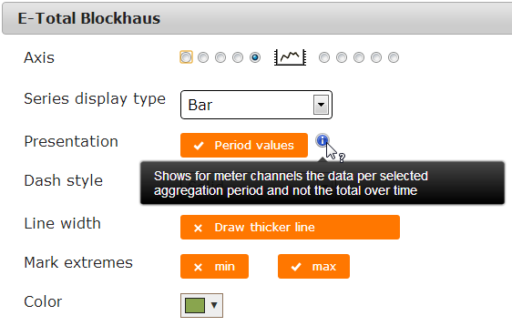
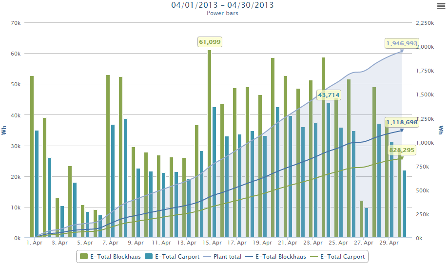
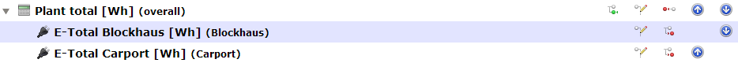

By default will meter channels show the consumption/production for the selected time range.
If an aggregation period is defined, you can also show the "delta" per period.
Let's show an example.
Solar production for 1 month, aggregated by day


To get this, the following settings are used:
● Start and end date for sure
● Aggregation period: 1 day
●
Channel settings:

Combine
If you have the required channel multiple times in your channel tree, you can combine them.

(Bars on the left, splines on the right y-axis)
For this I have a "Plant total" accumulator:

Created with the Personal Edition of HelpNDoc: Easy CHM and documentation editor